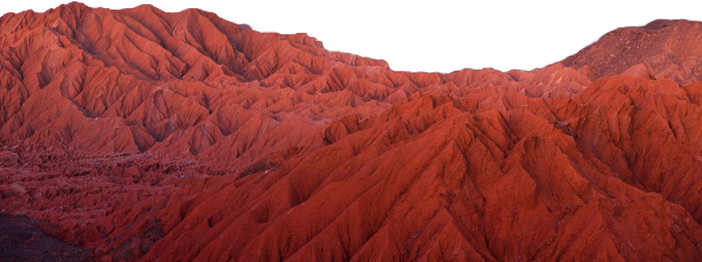
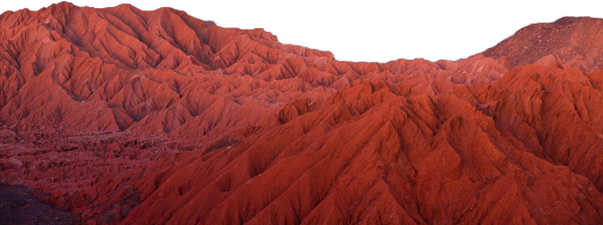
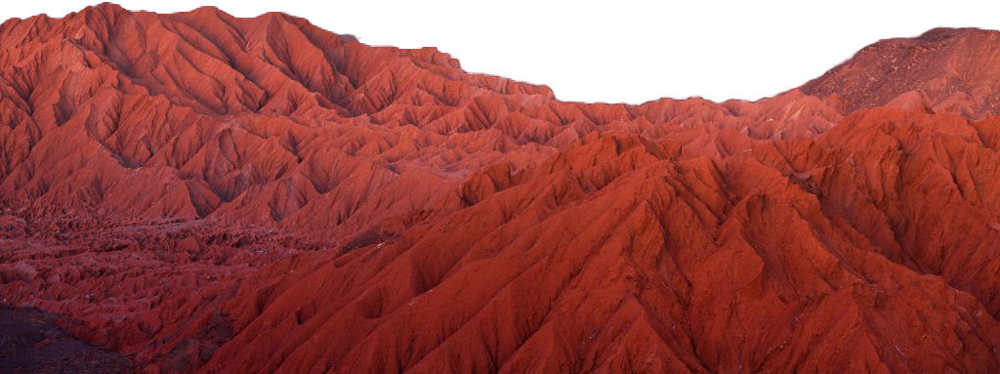
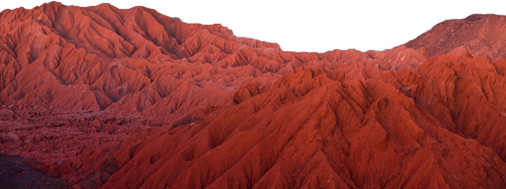

Atacama.

 



Deserto de Atacama está localizado na região norte do Chile até a fronteira com o Peru. Com cerca de 1 000 km de extensão, é considerado o deserto mais alto do mundo. É o deserto não polar mais seco do mundo, pois chove raramente na região, em consequência de as correntes marítimas do Oceano Pacífico não conseguirem passar para o deserto, por causa de sua altitude. Assim, quando se evaporam, as nuvens úmidas descarregam seu conteúdo antes de chegar ao deserto, podendo deixá-lo durante épocas sem chuva.